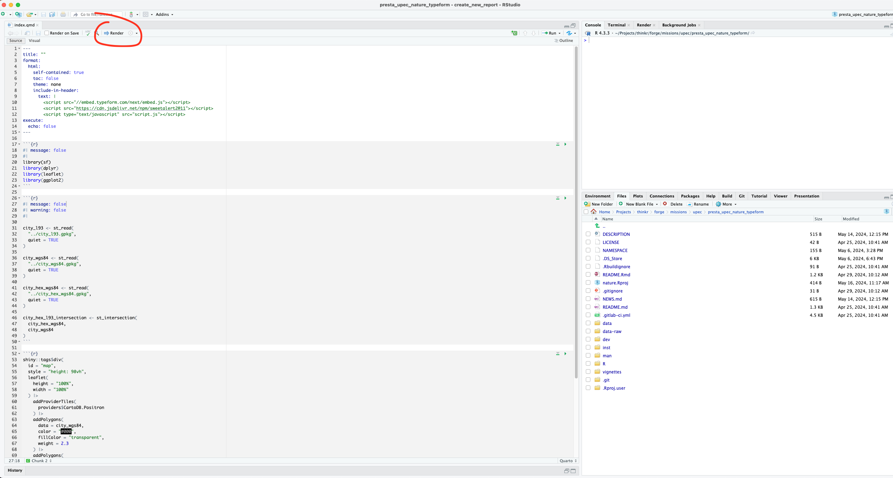

Créer une enquête pour une nouvelle ville
create_new_report.RmdPlusieurs étapes sont nécessaires pour créer une nouvelle enquête:
Préparation des données cartographique,
Création du questionnaire
Création du rapport
Préparation des données cartographiques
Afin de créer une nouvelle enquête, pour une nouvelle ville, il faut suivre les instructions suivantes :
Création d’un nouveau dossier (ville) dans ce package
Nous allons créer un nouveau dossier qui contiendra l’ensemble des fichiers et données pour l’enquête.
le_nom_de_la_ville <- "creteil"
dir.create(
path = file.path(
"..", "dev", tolower(le_nom_de_la_ville)
)
)Récupération des fichiers templates
Il existe deux fichiers qui contiennent l’ensemble des instructions R pour créer les cartes.
Copions ces fichiers dans le nouveau dossier :
templates <- list.files(
system.file(
"templates", "data_preparation",
package = "nature"
),
full.names = TRUE
)
file.copy(
from = templates,
to = file.path(
"..", "dev", tolower(le_nom_de_la_ville)
)
)Sélection des données carto
Cette étape consiste à suivre les instructions R contenues dans les fichiers copiés.
Le premier fichier à suivre est le fichier
city_preparation.qmd.
Il contient les instructions pour sélectionner les contours de la ville à enquêter.
/! Attention à bien modifier ce fichier avec le nom de la ville enquêtée.
Création du questionnaire
L’étape suivante consiste à créer le fichier HTML qui contiendra la carte pour le questionnaire.
Création du fichier HTML
Créons un dossier qui contiendra ce document :
dir.create(
path = file.path(
"..", "dev", tolower(le_nom_de_la_ville), "survey"
)
)Copions dans notre nouveau dossier les fichiers templates :
templates <- list.files(
system.file(
"templates", "html_survey",
package = "nature"
),
full.names = TRUE
)
file.copy(
from = templates,
to = file.path(
"..", "dev", tolower(le_nom_de_la_ville), "survey"
)
)Le fichier index.qmd du dossier survey est
le fichier qui va générer le fichier HTML avec la carte.
Ouvrir le fichier index.qmd
/! Modifier l’url du LimeSurvey si besoin dans le fichier
index.qmd
L’url est à la ligne n°76. Attention, à la fin de l’url, il y a
l’identifiant de la zone cliquée. Il faut conserver le
#position={id}.
Render le document pour avoir le fichier HTML.

rstudioapi::navigateToFile(
file = file.path(
"..", "dev", tolower(le_nom_de_la_ville), "survey", "index.qmd"
),
line = 1
)Cette opération doit générer un fichier
index.html.
Copie des fichiers
Dans le nouveau projet Rstudio, copier / coller le contenu du dossier
survey :
Le nouveau projet doit contenir, au minimum, le fichier
index.html et le fichier script.js.
Création du rapport
Dans cette partie, nous allons créer le rapport pour présenter les données !
Création du fichier HTML
Créons un dossier qui contiendra ce document :
dir.create(
path = file.path(
"..", "dev", tolower(le_nom_de_la_ville), "report"
)
)Copions dans notre nouveau dossier les fichiers templates :
templates <- list.files(
system.file(
"templates", "html_report",
package = "nature"
),
full.names = TRUE
)
file.copy(
from = templates,
to = file.path(
"..", "dev", tolower(le_nom_de_la_ville), "report"
)
)Le dossier report contient :
Le fichier
index.qmd: c’est le rapport. Une foisRender, un fichier HTML sera produit. Ce sera le fichier déployé sur Github.Le fichier
treeSelect.jscontient l’arborescence des dimensions. Il permet de générer le bouton de sélection des dimensions dans la page du rapport.Le fichier
utils.jsest le fichier qui permet la réactivité du rapport.Enfin, le fichier
map.jspermet d’ajouter des cartes dans le rapport.
Dans ce fichier, la fonction createMap permet de créer
une nouvelle carte :
createMap(
idElement = "map",
geodata_city = geodata_city,
geodata_hex = geodata_dataset,
property = "critere_bien_etre_global",
lat = latitude,
long = longitude
);idElement est l’identifiant qui permet d’associer la
carte avec celle dans le rapport index.qmd :
div(
id = "map",
class = "mt-3",
style = "height: 85vh;"
)Dans le fichier map.js, il faudra également préciser la
longitude et la latitude pour centrer les cartes sur la zone souhaitée
:
const latitude = 48.783329; /*Remplacez ici la latitude de la ville*/
const longitude = 2.46667; /*Remplacez ici la longitude de la ville*/Avant d’importer et de calculer les données pour les hexagones, il est possible de regrouper des “quartiers”. Pour cela, il faut suivre les étapes de ce fichier :
rstudioapi::navigateToFile(
file = file.path(
"..", "dev", tolower(le_nom_de_la_ville), "city_hex_group_preparation.qmd"
),
line = 1
)Il y a deux nouveaux fichiers à générer pour le rapport :
le fichier
geodata_city.jsqui contiendra les contours de la ville,le fichier
geodata_hex.jsqui contiendra les couleurs dex hex selon les données et les sous-populations étudiées.
Les instructions se trouvent dans le fichier
data_for_map_preparation.qmd :
rstudioapi::navigateToFile(
file = file.path(
"..", "dev", tolower(le_nom_de_la_ville), "report", "data_for_map_preparation.qmd"
),
line = 1
)Une fois les données préparées, il faut modifier le fichier
map.js avec les associations entre :
L’idenfiant de la carte <> la variable qui contient les données de la population.
La dernière étape consiste à Render le fichier
index.qmd afin d’obtenir un fichier
index.html.
Copie des fichiers
Dans le nouveau projet Rstudio, copier / coller le contenu du dossier
report :
Le nouveau projet doit contenir, au minimum, les fichiers qui
terminent par *.js et le fichier
index.html.